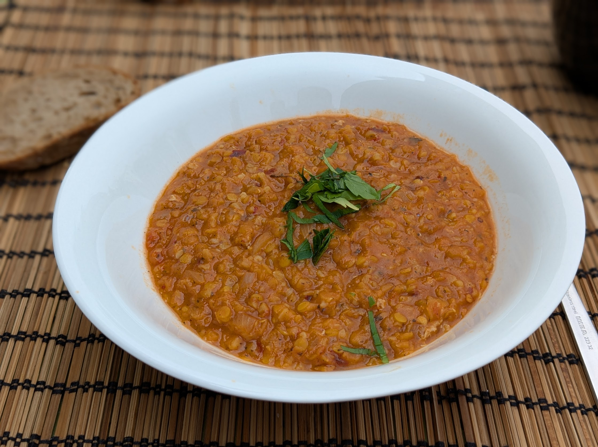

Ezogelin

Pour 2 personnes :
- Un litre de bouillon (de légumes, de volaille, ou un mélange)
- 160g de lentilles corail
- Un gros oignon
- 30g de boulgour
- Deux cuillères à soupe de concentré de tomates
- Une demi-cuillère à soupe de menthe séchée moulue
- Une demi-cuillère à soupe de pâte de piment turque ("biber salçası"), ou sinon de harissa, ça va pas être très authentique mais ça va être bon quand même
- Une cuillère à café de flocons de piment
- Une noisette de beurre
- Un citron
- Sel, poivre, beurre
- Faire chauffer le bouillon à feu fort. Éplucher et émincer finement l'oignon, rincer les lentilles et le boulgour, les mélanger avec le bouillon, et faire mijoter le tout à feu doux une demi-heure après les premiers bouillons.
- Ajouter le reste des ingrédients, sauf le citron. Laisser mijoter 15 minutes de plus.
- Ajouter un peu de jus de citron à la soupe. Mélanger, goûter, rectifier l'assaisonnement en sel, en poivre, et en citron. Servir chaud.